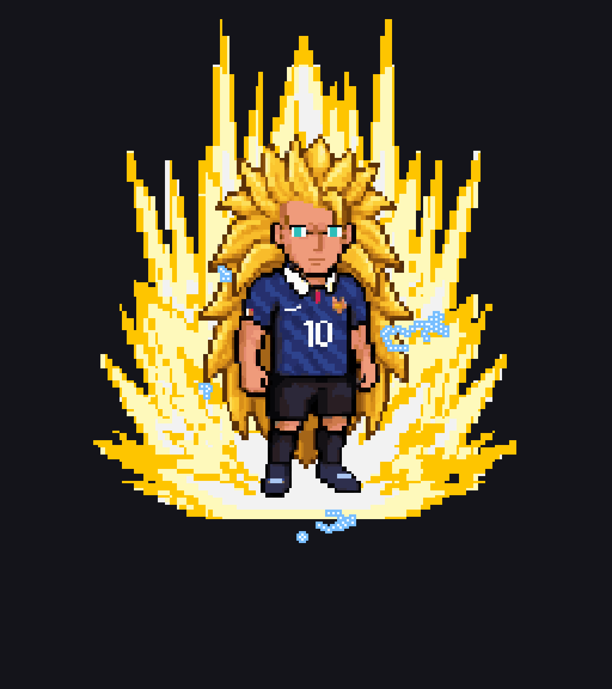
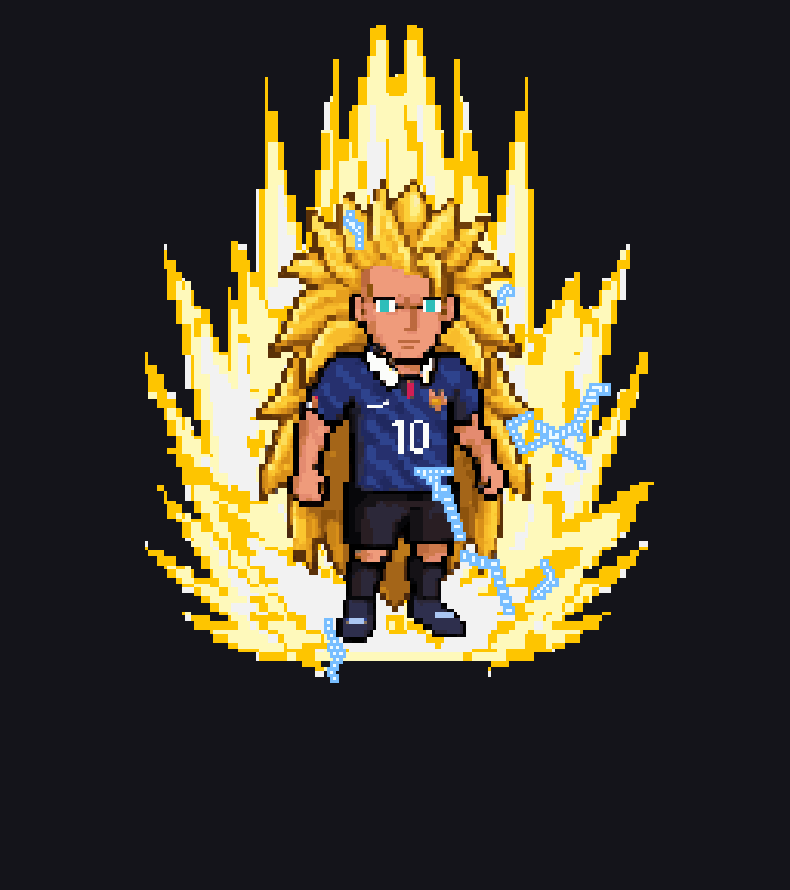
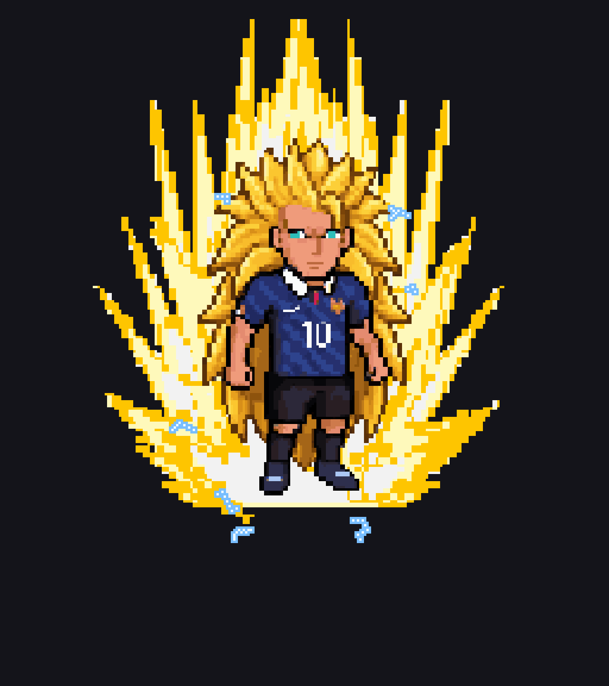

SSJ3 Charging Idle
Slimmer stroke, varied arc sizes, still body-hugging static


Commit 007ea20
The stroke is about a fifth slimmer, and arc sizes now range from small pops to occasional long discharges rather than all being one size. Every frame carries a different mix. SSJ2 is unchanged.
Slimmer stroke, varied arc sizes, still body-hugging static


Each frame carries a different mix of arc sizes





